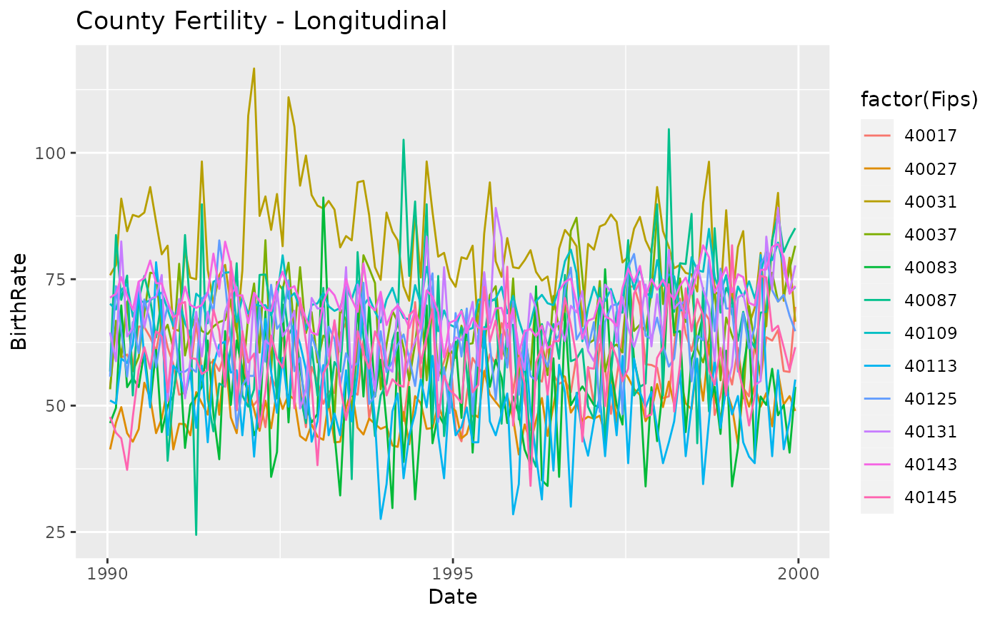
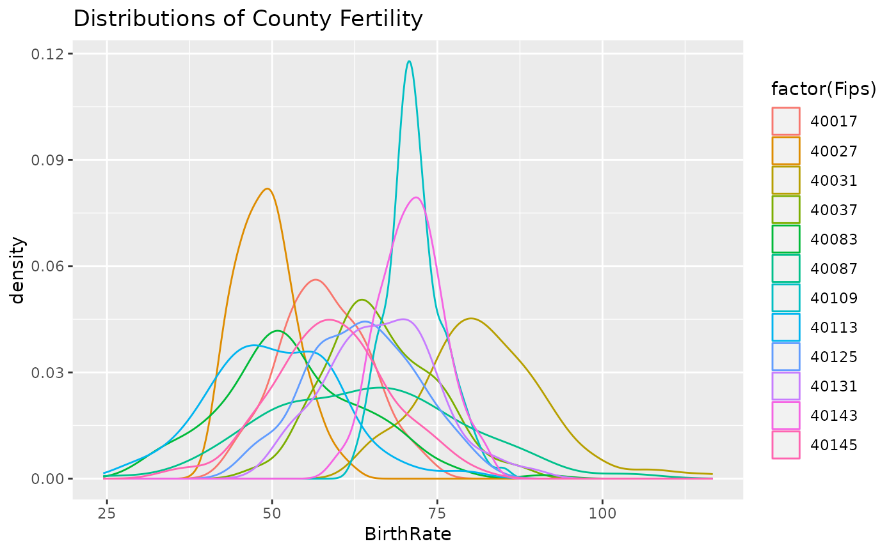
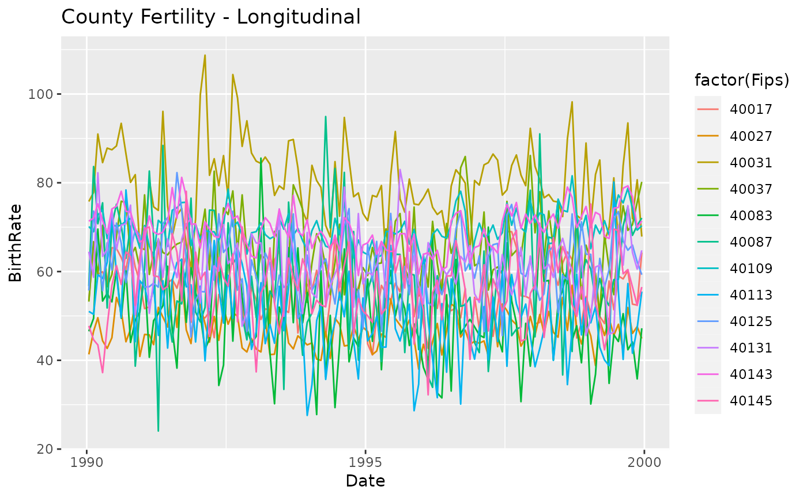
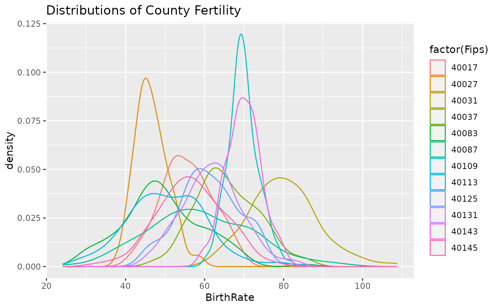

Monthly Growth Fertility Rates (GFR) for 12 urban Oklahoma counties
Source:R/CountyMonthBirthRateDoc.R
CountyMonthBirthRate.RdMonthly Growth Fertility Rates (GFR) for 12 urban counties in Oklahoma between January 1990 and December 1999. The GFR is defined as the number of births divided by the number of females (ages 15-44), multiplied by 1,000.
There are two datasets in this package that are almost identical. The 2014 version is better suited for substantive researchers in the areas of fertility and traumatic cultural events. The 2005 version recreates the 2005 article and, therefore is better suited for the graphical aims of the 2014 manuscript.
The difference is that the 2005 version uses constant estimate for a county population --specifically the US Census 1990 estimates. The 2014 version uses different estimates for each month --specificallly the US intercensal annual estimates, with linear interpolation for February through December of each year.
Format
A data frame with 1,440 observations on the following 11 variables.
- Fips
The county's 5-digit value according to the Federal Information Processing Standards.
integer- CountyName
The lower case name of the county.
character- Year
The year of the record, ranging from 1990 to 1999.
integer- Month
The month of the record, ranging from 1 to 12.
integer- FecundPopulation
The number of females in the county, ages of 15 to 44.
numeric- BirthCount
The number of births in a county for the given month.
integer- Date
The year and month of the record, with a date of the 15th. Centering the date within the month makes the value a little more representative and the graphs a little easier.
date- DaysInMonth
The number of days in the specific month.
integer- DaysInYear
The number of days in the specific years
integer- StageID
The `Stage' of the month. The pre-bombing records are `1' (accounting for 9 months of gestation); the post-bombing months are `2'.
integer- BirthRate
The Growth Fertility Rate (GFR).
numeric
Details
<<Joe, can you please finish/edit this sentence?>> The monthly birth counts were copied from county records by Ronnie Coleman during the summer of 2001 from state vital statistics records. It was collected for Rodgers, St. John, & Coleman (2005).
The US Census' intercensal estimates are used for the January values of
FecundPopluation. Values for February-December are interpolated using
approx.
The datasets were manipulated to produce this data frame by the two R files IsolateCensusPopsForGfr.R and CalculateGfr.R.
References
Rodgers, J. L., St. John, C. A. & Coleman R. (2005). Did Fertility Go Up after the Oklahoma City Bombing? An Analysis of Births in Metropolitan Counties in Oklahoma, 1990-1999. Demography, 42, 675-692.
[Intercensal estimates for 199x](https://www.census.gov/data/tables/time-series/demo/popest/intercensal-1990-2000-state-and-county-totals.html)
[Intercensal estimates for 200x](http://www.census.gov/popest/data/intercensal/county/county2010.html)
* [US Census Intercensal Estimates](https://www.census.gov/programs-surveys/popest/technical-documentation/file-layouts.html) for [199x]() and [200x](https://www.census.gov/programs-surveys/popest/technical-documentation/file-layouts/2000-2010-intercensal.html).
Examples
library(ggplot2)
##2005 Version (see description above)
ds2005 <- CountyMonthBirthRate2005Version
ggplot(ds2005, aes(x=Date, y=BirthRate, color=factor(Fips))) +
geom_line() +
labs(title="County Fertility - Longitudinal")

ggplot(ds2005, aes(x=BirthRate, color=factor(Fips))) +
geom_density() +
labs(title="Distributions of County Fertility")

##2014 Version (see description above)
ds2014 <- CountyMonthBirthRate2014Version
ggplot(ds2014, aes(x=Date, y=BirthRate, color=factor(Fips))) +
geom_line() +
labs(title="County Fertility - Longitudinal")

ggplot(ds2014, aes(x=BirthRate, color=factor(Fips))) +
geom_density() +
labs(title="Distributions of County Fertility")
